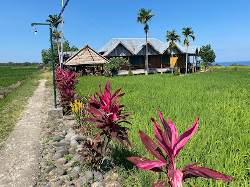

Destinasi Unggulan
Danau Toba
Danau vulkanik terbesar di Asia Tenggara, dikelilingi pegunungan dan budaya Batak.
Lokasi: Sumatera Utara
📠Lihat di Google MapsRaja Ampat
Surga bawah laut dengan terumbu karang dan pulau eksotis yang memukau.
Lokasi: Papua Barat
📠Lihat di Google MapsGunung Bromo
Gunung aktif dengan pemandangan matahari terbit dan lautan pasir yang luas.
Lokasi: Jawa Timur
📠Lihat di Google Maps

Desa Wae Rebo
Desa adat di atas awan dengan rumah kerucut dan suasana tenang.
Lokasi: Flores, NTT
📠Lihat di Google Maps